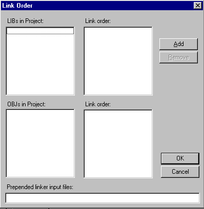

Home
| Search
| CTG
| RTL
| IDDE
| STL
Home
| Search
| CTG
| RTL
| IDDE
| STL
Last update Fri Apr 28 16:30:17 2006
|
Reference 1. Introducing Digital Mars C++ 2. Introducing the IDDE Part 2: Creating an Application with Digital Mars C++ 3. Starting a Project and Defining Workspaces 4. Generating an Application Framework 5. Defining Classes and Their Hierarchies 6. Editing Program Code 7. Adding Look and Feel with Resources 8. Testing an Application Part 3: Learning Digital Mars C++ by Example 9. Introduction to the Tutorial 10. Lesson 1: Create the DOS Application 11. Lesson 2: Generate an Application Framework 12. Lesson 3: Customize the Interface 13. Lesson 4: Add Messages with ClassExpress 14. Lesson 5: Add a Dialog Box with ClassExpress Part 4: More about Creating Programs 15. More about Projects and Workspaces 16. More about Project Build Settings 17. More about AppExpress 18. More about ClassExpress 19. Class Editor Reference 20. Hierarchy Editor Reference 21. Text Editor Reference 22. Using Version Control Part 5: More about Testing Programs 23. Controlling and Configuring the Debugger 24. Commands Available in Debugging Mode Part 6: About Managing Resources 25. ResourceStudio Resource Editor 26. Dialog Editor 27. Menu, Accelerator and String Table Editors 28. Bitmap, Cursor, Icon, and Font Editors 29. Version Information and Custom Resource Editors Part 7: Appendixes A. Expression Evaluation B. IDDE Settings and Command-Line Options C. Using NetBuild |
16. More about Project Build SettingsThis chapter details the options for controlling how a project is built continuing from Chapter 15, More about Projects and Workspaces. It lists and explains the options on the Build page of the Project Settings dialog box. Access these options by selecting Settings from the Project menu, then clicking on the Build tab.The Build page of the Project Settings dialog box is composed of 18 subpages. The subpages are displayed in a listbox on the left of the window. To access a particular subpage, click on its name. The options displayed on the right change with each subpage. Subpages are organized hierarchically, as shown in the listbox. This chapter covers all the subpages on the Build page of the Project Options dialog box. The first section introduces the build settings and the Project Settings dialog box, and the later sections describe the subpages in the order in which they are listed on the Build page. For more detailed information on how each of these options affects the compilation of code, refer to the Compiler and Tools Guide. Appendix B, IDDE Settings and Command-Line Options, details how each of these options map to the corresponding DMC, Optlink, Make, or Librarian command line options. Introducing Build SettingsChoose the Settings command from the IDDE's Project menu to open the Project Settings multipage dialog box. Using the tabs at the top of the dialog box, select different pages, each of which presents a set of options.Click on the Build tab in the dialog box to open the Build page. The Build page is composed of subpages of options. Select a subpage by clicking on its name in the listbox on the left of the Build page. The following subpages are available:
CompilerThe Compiler subpage (Figure 16-1) contains a variety of parameters controlling compilation.
[Figure 16-1 Compiler subpage] Enforce ANSI compatibilityEstablishes the necessary parameters so the compiler accepts only C/C++ code that conforms to ANSI standards. Refer to the Compiler and Tools Guide for information on the restrictions that take effect.Treat source as C++With this option selected, the compiler treats C source files as C++ files. The option is useful for:
Relax type checkingCauses the compiler to use relaxed (non-ANSI) type checking. The following data types are then treated as equivalent:
Suppress predefined macrosSuppresses the definition of the non-ANSI predefined macros.Exception handlingEnables implementation of exception handling.Run-time type informationEnables implementation of run-time type information.Enable new[], delete[] overloadingEnables overloading of operator new[] and operator delete[]. It also sets the predefined macro _ENABLE_ARRAYNEW to 1.Compiling with Enforce ANSI compatibility automatically enables this option. char behaviorThis option controls the way the compiler treats a char type. By default, the compiler treats char types as signed. Set this option to unsigned to quickly port code that depends on unsigned char types. Note that the behavior of the run-time library routines is not affected by this option unless they are also recompiled.
PrototypingThis option specifies how the compiler handles function prototypes. New code should always be fully prototyped, due to the requirements of type-safe linkage and the support for alternative linkage conventions.There are three prototyping possibilities: Standard, Autoprototype, and Strict.
International charactersThis option specifies how the compiler interprets 2-byte Asian language character codes within character constants and strings. That is, if a character code represents the first byte of a 2-byte sequence, the second byte is not checked to see whether it is a backslash or a closed quote. The second byte cannot be a NULL (0), a carriage return (0x0D), or an end-of-file (0x1A).
Other optionsThe options below direct the compiler to define a macro, include a header file, or instantiate a template.DefinesSpecify macro definitions on the compiler command line. Separate multiple Defines with a semicolon (;).Include filenameDirects the compiler to include a header file for all modules in the project.Instantiate templateCreates an instance of a template in the program.Code GenerationThe Code Generation subpage, shown in Figure 16-2, contains parameters that control how the compiler generates code.
[Figure 16-2 Code Generation subpage Pointer validationMakes the resulting program validate each pointer as it is dereferenced; if the pointer is invalid, a run-time error occurs. This slows and slightly increases the size of the resulting code.Generate stack frameGenerates a stack frame for each function. The stack frame is generally for the use of the debugger.Check stack overflowInserts stack overflow checking at the beginning of each function. The resulting program aborts with an error message if it detects a stack overflow.Fast floating pointDirects the compiler to produce the fastest possible floating-point code. No compatibility checking is performed.Generate inline 8087 codeCauses the compiler to generate inline 80x87 instructions. It significantly speeds up floating-point code, reduces its size, and improves its accuracy.Generate virtual function tables in far dataAffects Compact and Large memory models only. It causes the virtual function tables to be placed in far data segments rather than in the code segment.Use Pascal calling conventionMakes Pascal, instead of cdecl, the default linkage for all functions and global data. Because all C library routines have cdecl linkage, they must be prototyped as such before being called. Therefore, include the appropriate header files. The main() function must also be declared cdecl for the linker to find it.Using Pascal as the default linkage type results in a roughly 3% code size reduction and a corresponding speed up in generated code. Use Stdcall calling conventionMakes stdcall the default linkage for all functions and global data, instead of cdecl.Note: Under Windows 95 and Windows NT, Digital Mars's name mangling scheme now appends the string "@nn" to the names of all stdcall functions (where nn is the number of bytes in parameters to the function). Previous versions of Digital Mars C++ did not append this string to mangled names. Enable function-level linkDirects the compiler to encapsulate functions in initialized common blocks (COMDAT records). This allows the linker to perform function-level linking, which results in a smaller executable.No default libraryPrevents the compiler from embedding the default library record in the object file. This option can result in a significant decrease in program size when generating a large library.Set data thresholdPlaces large arrays in far data segments. The threshold size is set in the adjacent textbox.Code segmentThese options govern the ways in which code segments are handled.Generate new segment for each functionCauses the compiler to start a new code segment each time it encounters a global far function. The name of the segment is the name of the function with _TEXT appended.Override default code segment nameOverrides the default code segment name. Type the new name in the Name textbox.Put switch tables in code segmentPlaces switch tables in the code segment rather than in the data segment. It is useful when data segment space is critical. Do not use this option when the code segment in a Small or Compact model program is close to overflowing.Put expression strings in code segmentPuts expression string literals into the code segment rather than wasting space in a group.Struct alignmentSets the boundaries for structure alignment. The default is to align members within a structure on word boundaries for 16-bit programs. This maximizes speed on computers with a 16-bit bus (such as a PC-AT). The default in 32-bit DOS programs is to align on double-word boundaries to maximize performance.
Target CPUGenerates code tailored for the instruction set of a specific CPU.
Header FilesThe Header Files subpage (Figure 16-3) specifies compiler header file options.
[Figure 16-3 Header Files subpage Precompile optionsIf using a large header file or numerous small headers, the compiler spends considerable time compiling the same source code over and over again. To reduce compile time, use precompiled header files; the compiler can load a precompiled header faster than it can a text header file. It is especially useful to precompile large header files that seldom change, such as windows.h.No headersDisables generation and use of precompiled headers.All headersIn most cases, using precompiled headers is convenient and fast. The All Headers option automatically precompiles all header files defined in the project source files into the file scph. sym. The file scph. sym is always in the current directory or in the directory specified as the compiler output directory.Setting the All Headers option causes the compiler to generate the file scph.sym when it does not exist. If the scph.sym file does exist, the compiler assumes it is a precompiled header. The compiler will then test the header file to see whether all the headers it contains are older than the header file itself. If any are newer, or if the compiler flags have changed, a new scph.sym file is created; otherwise, the old file is loaded as a precompiled header. Setting the All Headers option also causes all files being compiled to use scph.sym as their precompiled header. The compiler writes out the precompiled header when the first line in the top-level source file is encountered, and when that line is not a comment or an #include statement. To avoid problems with precompiled headers:
There are two circumstances in which using precompiled headers is not recommended:
Specific headerSelects a header file to precompile individually. Type the header file name into the textbox.Use precompiled headers from directoryTells the compiler to use precompiled headers from a specific directory. In the textbox, type the name of the directory in which the precompiled headers reside. If this directory is empty, no additional directories, other than the current or path directories, are searched.Include headers onceTells the compiler to include each header file only once, even if it is named in more than one source file. Otherwise, header files are included whenever they are named in a source file. This option can be used with or without precompiled headers.Memory ModelsThe Memory Models subpage (Figure 16-4) specifies the memory model to be used.
[Figure 16-4 Memory Models subpage Memory modelControls the memory model the compiler uses by specifying its size:
Data segmentThese options control the way the compiler treats the data segment register.Assume SS==DSCauses the compiler to generate code that assumes SS equals DS.Always reload DSCauses the compiler to generate code that reloads DS at the beginning of each function call.Code OptimizationsOptions on the Code Optimizations subpage (Figure 16-5) control how the compiler optimizes code.
[Figure 16-5 Code Optimizations subpage Optimization forThese radio buttons control the type of optimization. Optimize for speed or space, select a custom set of optimizations, or disable optimization.
OptimizationsThe Optimization check boxes control the individual optimizations. These options relate only to the Custom radio button.For more information on how Digital Mars C++ optimizes code, see the Compiler and Tools Guide. C++ inliningControls inline function expansion in C++. When debugging C++ files, the presence of inline code can present considerable problems to most symbolic debuggers. This option suppresses the production of inline code.Windows Prolog/EpilogThe Windows Prolog/Epilog subpage (Figure 16-6) specifies the type of Windows prolog and epilog code that the compiler attaches to each far function in a compilation.
[Figure 16-6 Windows Prolog/Epilog subpage The first group of radio buttons selects from predefined sets of prolog/epilog options. Set EXE defaultsSets options to generate prologs and epilogs for a protected-mode Windows application, with callback functions all marked as _export.Set DLL defaultsSets options to generate prologs and epilogs for a protected-mode Windows DLL, with callback and exported functions all marked as _export.Real mode full prolog/epilogSets options to generate prologs and epilogs for a real or protected-mode Windows application or DLL.Real mode reducedSets options to generate prologs and epilogs for a real or protected-mode Windows application or DLL with exported and callback functions (marked with _export).Real mode smart callbacksSets options to generate prologs and epilogs for a real or protected-mode Windows application with smart callbacks. In smart callbacks, the compiler compiles far functions with a smart prolog and epilog that loads the data segment from the stack segment. Use smart callbacks only with applications in which the data segment is the same as the stack segment (DS== SS). Do not use it with DLL files.CustomSpecifies a nonstandard set of prolog/epilog options.The remaining options on the Windows prolog/epilog subpage are discussed in the Compiler and Tools Guide. OutputThe Output subpage (Figure 16-7) controls the output generated by the compiler.
[Figure 16-7 Output subpage Source listing filesWith this option on, the compiler creates a source listing file; its name is that of the source file with the extension .lst. The compiler inserts error messages and line numbers in the listing file.VerboseDisplays source and header file names, classes, function prototypes, and time of execution during compilation.Macro expansionsTells the compiler to create macro expansions in error listings.Assembly listing (.cod)Causes the compiler to generate a .cod file containing an assembly language representation of the program.WarningsThe options on this subpage, shown in Figure 16-8, control how the compiler produces warnings and enables the compiler to generate only specific warnings.
[Figure 16-8 Warnings subpage] WarningsDetermines the warning messages that are produced:
Treat warnings as errorsCauses the compiler to promote warnings to errors. Setting this option allows using the error window to find warnings in the source file.Turn off error maximumMakes the compiler continue rather than stop when its error limit is reached. The compiler processes the entire source file and displays all errors it has detected.Selected warningsDetermines the warning messages that are produced. For more information on the specific warnings, refer to the Compiler and Tools Guide.Debug InformationThe Debug Information subpage (Figure 16-9) controls the information the compiler places into the code for debugging. These options specify the level of debugging, debug information, and other conditions.
[Figure 16-9 Debug Information subpage Debug informationThese radio buttons select from predefined sets of debug information options.
Trace prolog/epilogAdds the user-defined function calls __trace_pro_f and __trace_epi_f to the prolog and epilog, respectively, for each function. The prolog function is called after the stack frame is set up; the epilog function is called just before the stack frame is destroyed.Line numbersPlaces line numbers corresponding to the source into the code. Line number information significantly increases the size of the object file.Symbolic debug informationIncludes symbol information for all public symbols. Symbols significantly increase the size of the object file.Three additional options become available when Symbolic Debug Information is checked:
Make static functions globalMakes all static functions global. The linker then can enter the names of these functions into the map file and place global debugging information in the executable.LinkerThe Linker subpage (Figure 16-10) governs the overall behavior of the linker.
[Figure 16-10 Linker subpage Debug informationPlaces debugging information in the executable file. This is the normal option for linking an executable for debugging using the IDDE.No default libraryCauses the linker to ignore libraries specified in object files.Case sensitiveCauses the linker to be case sensitive.Far call translationCauses the linker to convert intrasegment far calls to near calls.Reorder segmentsPlaces like segments in contiguous locations.Export by ordinalFor 32-bit output, causes the linker to export symbols by ordinal. For 16-bit output, when this option is on, the name text for every exported symbol is moved from the resident name table to the nonresident name table.Don't export namesEliminates storage of name text for symbols exported by ordinal.Export, case sensitiveMakes the linker treat the import and export symbols as case sensitive.Export, uppercaseForces the linker to convert import and export symbols to uppercase.DOSSEG orderingCauses the linker to perform the special segment ordering used by Microsoft high-level languages.No null DOSSEGCauses the linker not to offset the first segment by 10.Warn if dupsCauses the linker to warn if there are duplicate symbols in the code.Delete EXE/DLL on errorDeletes target executable if a link error occurs.Create ImpDefForces the linker to generate a .din file, which combines export information from source, definition file, and options.Fix DSTurning this option on has the same effect as putting a FIXDS directive in the .def file.Keep segments in .def orderCauses the linker to keep segments in the order in which they appear in the .def file (Windows only).Requires Windows 3.0Causes the linker to tag the executable as requiring Windows 3.0 or later to run.Requires Windows 3.1Causes the linker to tag the executable as requiring Windows 3.1 or later to run.Generate import libraryDirects the linker to build an import library (.lib) describing the exported symbols available to be imported from a DLL.Import lib page sizeSets the page size for the Generate Import Library option.AlignmentIn conventional MS-DOS executables, causes the header to be rounded up to the specified size. In segmented .exe files, this option governs the page size.BaseSets the base address of the executable.Entry pointSpecifies the program entry point for Win32 applications.Packing & Map FileThe Packing & Map File subpage (Figure 16-11) controls the linker's output of cross-reference and map files.
[Figure 16-11 Packing & Map File subpage PackingThis group of options controls target packing.Win packPacks Windows programs.EXE packCompresses the executable file.Smart linkingEnables smart linking of object files containing COMDAT records; only referenced COMDAT records are retained.Pack codeCauses the linker to combine code segments. The size textbox specifies the maximum code segment size.Pack dataCauses the linker to combine data segments. The size textbox specifies the maximum data segment size.Map fileThese options generate a file containing a list of segments, in the order of their appearance in the module. This group of options controls map file generation.
Map file optionsThese options control the contents of the map file.Cross referenceCauses the linker to generate a cross-reference list in the map file.Line numbersControls whether line-number information is contained in the map file.Group informationEnables output of group information.DefinitionsThe Definitions subpage (Figure 16-12) contains the parameters necessary to create the .def file for an application.
[Figure 16-12 Definitions subpage NameDefines the name of the application, which is used by Windows to identify the application. A name is required for all Windows applications.DescriptionContains a description of the application. This optional string is placed in a Windows executable. It can be used for version control or to otherwise help identify the application.Heap sizeSpecifies the size of the application's local heap. The default is 4096. If the application frequently uses the local heap, specify a larger heap size.For Windows 3.1, heap size is a single text field. For Win32s, the field has two parts: Reserve and Commit, where Reserve is optional. Reserve tells Win32s how much heap space to try to get for this application. Commit specifies the amount of heap space the application actually needs. The two fields are separated by a comma (,). For example, 100000, 4096 would specify 100000 for Reserve and 4096 for Commit. Stack sizeDefines the size, in bytes, of the executable's stack. The default is 4096 bytes. The stack is used for storing function arguments. It's common to need to increase the stack size, especially for applications containing heavily recursive functions.For Windows 3.1, stack size is a single text field. For Win32s, the field has two parts: Reserve and Commit, where Reserve is optional. Reserve tells Win32s how much stack space to try to get for this application. Commit specifies the stack size the application actually needs. StubSpecifies an optional file that defines the executable stub to be placed at the beginning of the executable. When a user tries to run the application from DOS, the stub is executed instead. Many applications use the winstub.exe file supplied with the Windows SDK. Any DOS or DOSX executable can be used.VersionContains optional version information that becomes part of the executable file.Initialize onceThe DLL's initialization routine is called only when the module is initially loaded into memory.Private libCreates a private DLL that is called.Initialize processThe DLL's entry point is called when a process attaches.Terminate processThe DLL's entry point is called when a process terminates.Initialize threadThe DLL's entry point is called when a thread attaches.Terminate threadThe DLL's entry point is called when a thread terminates.SegmentsThis subpage, shown in Figure 16-13, provides segment information for the .def file.
[Figure 16-13 Segments subpage Segment TypeThis option toggles between two option sets: one for code segment, and one for data segment.
AttributesThese options define the attributes for the application.ConformingTurns on the conforming bits for the segment. This attribute can be set for code segments only.DiscardableLets the system flush the segment from memory. This attribute can be set for code segments only.SharedLets multiple applications use this segment simultaneously (DLLs only). This attribute can be set for both code and data segments.PreloadLoads the segment when the executable file or library is loaded. This attribute can be set for both code and data segments.I/O privilegeTurns on the I/O privilege bit for the segment. This attribute can be set for code segments only.MoveableLets the segment be moved when memory is compacted. This attribute can be set for both code and data segments.Access RightsSelect access privileges for a segment.Execute ReadLets an executable read from or execute a segment, but not write to a segment.Execute OnlyLets an executable execute, but not read or write, the segment. This attribute can be set for code segments only.Read WriteLets an executable read from a segment, or write to a segment, but not execute a segment.Read OnlyLets an executable read from a segment, but not write to or execute the segment. This attribute can be set for data segments only.InstanceSelect the type of data segment generated.Multiple data segmentsForces the generation of multiple data segments.Single data segmentForces the generation of a single data segment.ModeSelect the type of executable file generated.Protected modeCauses the application to run in protected mode.Real modeCauses the application to run in real mode.Imports/ExportsThe Imports/Exports subpage (Figure 16-14) defines the names of routines in DLLs that the executable can use. It also defines the names of routines that the target (which must be a library) exports to other programs. The IMPORTS and EXPORTS statements are placed in the .def file.
[Figure 16-14 Imports/Exports subpage ImportsThis section defines the names of routines in DLLs that the application can use.Internal nameContains the name by which the imported routine is called internally. If omitted, the internal name is the same as the external name.External fileContains the name of the DLL from which the routine is imported.External nameContains the name of the DLL routine to be imported.OrdinalSpecifies the ordinal number in the DLL of the routine to be imported. Specify the ordinal or the external name, but not both.Add, Replace, RemoveClicking on the Add button adds the routine to the list of imported routines. Clicking on the Replace button uses the routine to replace the currently selected routine in the list. Clicking on the Remove button removes the currently selected routine from the list.ExportsThis section defines the names of routines that can be exported from the DLL.External nameContains the name by which the DLL routine will be known to other applications.Internal nameContains the name of the DLL routine to be exported.OrdinalSpecifies the ordinal number by which the DLL can be referenced in other applications. This is optional unless No name is set.ParametersSpecifies the total number of words occupied by the function's parameters. This option applies only to protected-mode functions with I/O privilege.No dataSpecifies that this function does not reference any data. This option applies only to real-mode Windows functions with I/O privilege.No nameSpecifies that the function can only be referenced by ordinal number.Memory resident nameMakes the function name memory resident, even though an ordinal number is specified.PrivateCauses PRIVATE to be added to the names in the module definition file; this directs the IMPLIB utility to ignore the EXPORTS statements.Add, Replace, RemoveClicking on the Add button adds the routine to the list of exported routines. Clicking on the Replace button uses the routine to replace the currently selected routine in the list. Clicking on the Remove button removes the currently selected routine from the list.Resource CompilerThe Resource Compiler subpage (Figure 16-15) contains options to control the resource compiler.
[Figure 16-15 Resource Compiler subpage Error maximumMakes the resource compiler stop when its error limit is reached. If this option is off, the resource compiler processes the entire source file and displays all errors that have been detected.Use predefined macrosDirects the resource compiler to use all predefined macros for the resource file.Generate warningsShows warning messages.VerboseShows greater detail when compiling resources.32-bit resourcesSpecifies creation of 32-bit resource files.Define macrosSpecifies macros that should be defined for the resource compilers.Source file listingSpecifies the name of the output listing file to create from the .res script.Default hex languageSpecifies the default hexadecimal language for 32-bit resources.Code pageSpecifies the code page used to convert strings in 32-bit resources to Unicode (currently unused).International charactersThis option specifies how the resource compiler interprets 2-byte Asian language character codes within character constants and strings. That is, if a character code represents the first byte of a 2-byte sequence, the second byte is not checked to see whether it is a backslash or a closed quote. The second byte cannot be a NULL (0), a carriage return (0x0D), or an end-of-file (0x1A).
MakeThe Make subpage (Figure 16-16) sets Make options for the IDDE built-in Make.
[Figure 16-16 Make subpage The radio buttons at the top of the dialog box control the Make program that will be run when the IDDE builds the project.
IDDE make optionsThis group of options governs the IDDE Make.Build orderOpens the Build Order dialog box (see Figure 16-17).Link orderOpens the Link Order dialog box (see Figure 16-18).Track dependenciesSpecifies whether or not to track dependencies (enabled by default). More time is required to track dependencies for large projects with many include files. The most effective way to use this option to establish the correct dependencies is to turn it on when first building a project. Then turn it off, except when changing the dependency structure (by changing #include statements, for example).If dependencies are tracked, the dependent files are shown in the Project window. Track system includesSpecifies whether to track dependencies in system include files (disabled by default).On error continue unrelatedCauses the IDDE Make to continue to build modules that are not dependent on the module in which the error occurred.Ignore errors in buildDirects the IDDE Make to ignore errors and continue to build the target.MultitaskingAffects the responsiveness of the system to a command to execute another task within Windows while the project is being built.
NetbuildThe IDDE allows the build process to be distributed among one or more remote servers. For more information, see Appendix C, "Using NetBuild."Use NetBuildEnables distributed builds.Use remote headersAllows the remote server to use the header files provided with Digital Mars C++ on the build server. When this option is off, the build server takes the files from the local machine.Working directorySpecifies the working directory on the remote server.Remote passwordSpecifies the password for logging on to the remote server.Build orderThe Build Order button is only enabled when .prj, .bat, or .mak files are in the project. Clicking on this button opens the Build Order dialog box, shown in Figure 16-17.
[Figure 16-17 Build Order dialog box] The Build Order dialog box specifies the stage of the build in which the .prj, .bat, or .mak files are executed. Do this by selecting a file from the Build File Pool list, clicking on one of the build steps on the right, then clicking on Add. The selectable steps are:
Link orderThe Link Order button opens the Link Order dialog box, shown in Figure 16-18. [Figure 16-18 Link Order dialog box] The Link Order dialog box specifies the order in which libraries and object files added explicitly to the project are linked. Do this by iteratively selecting files from the LIBs in Project or the OBJs in Project listbox, then clicking Add to move the files to the Link Order listbox. Return a file to the LIBs in Project or the OBJs in Project listbox by selecting the filename and clicking on Remove. The libraries added explicitly to the project are linked before other libraries. The object files added explicitly to the project are by default linked after the object files generated by compiling source files in the project. To specify object files to be linked before any other object files use the Prepended linker input files textbox. When done with the link order, click OK to return to the Make subpage. External MakeThe options on this subpage govern the use of a make utility other than IDDE Make. Figure 16-19 shows the External Make subpage.
[Figure 16-19 External Make subpage] Using external makeTo use a separate external Make program:
The radio buttons at the top of the dialog box control the Make program that will be run when the IDDE builds the project:
Make command lineThe Make Command Line textbox holds the .exe name of the external Make program followed by any arguments.Initial directoryUse this textbox to specify the directory from which the Make utility will run.LibrarianThe Librarian subpage (Figure 16-20) specifies options for building a library.
[Figure 16-20 Librarian subpage] Ignore caseDirects the librarian utility to ignore case in symbols.Do not create backupKeeps the librarian utility from backing up the original library. When this option is turned off, the original library is saved in a backup file.Page sizeSpecifies the library page-swapping size. |